操作系统
OS 导论:ok:
Overview
Intro
-
OS Defination: resource allocator + control program
-
kernel: The one program running at all times on the computer is the kernel
-
4 Parts: 用户、应用、系统软件、硬件
Computer System Organization
- 开机运行时，加载引导程序bootstrap：存放在固件 firmwork例如ROM EPROM，定位操作系统kernel并加载到内存
- 冯诺依曼架构中 最核心的部件是memory
- I/O 结构，IO设备可以和CPU并行，IO设备有设备控制器，设备控制器有local buffer，CUP 控制主存和local buffer进行数据交换，IO操作来自local buffer，然后设备控制器通过系统总线引起中断。
- 中断vector：包含所有中断服务例程 ISR 的地址。
- 中断架构保存中断指令的地址；Incoming interrupts会被disabled，防止当前中断丢失；操作系统是中断驱动的；
- Trap： err 或 useer request/system call引起的中断
- Interrupt Handling：通过寄存器和程序计数器；判断类型：轮巡还是系统向量；
- 两种IO类型 ：
- 同步IO Synchronous：IO开始之后其他的操作必须等待这个IO完成才能继续工作，需要等待；
- 异步IO Asynchronous：IO开始之后，控制权交给用户了，不需要等待这个IO操作完成； 设备状态表：记录每个IO设备的的信息，使用链表记录；
- DMA/直接内存访问：能已接近内存的速度传递信息，用于高速OS设备中，无需CPU，每一块产生一个中断
- 存储结构
- 三层结构，按照速度、价格、易失性分类；
- Cashing：泛指一种将信息复制到更快存储系统的技术原理，用来解决速度不匹配的情况；
- 从磁盘到寄存器中间的数据迁移分为两种类型
- 多任务Multitasking，注意不同级别数据一致性的问题
- 多处理器Multiprocessor，注意硬件中cache一致性问题，有SMP架构 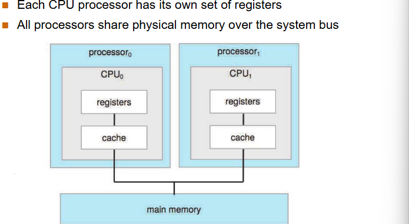 多核系统Multicore：同一个处理器/芯片上有多个CPU/核心 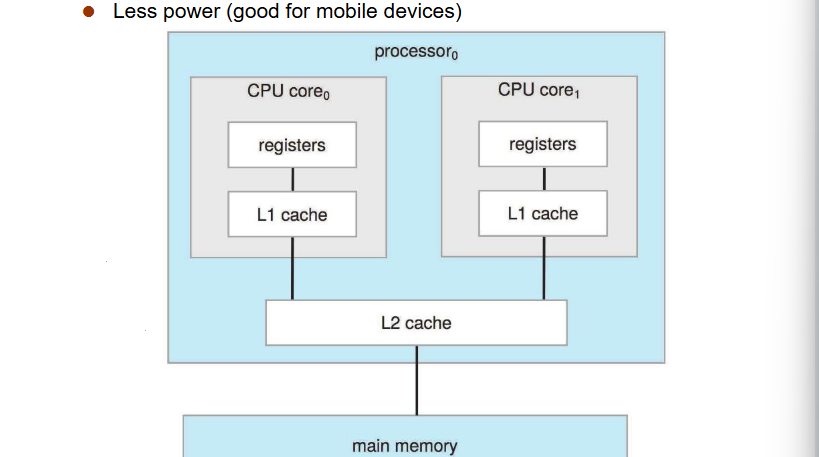 NUMA架构：CPU相连，扩展高效但远的CPU慢 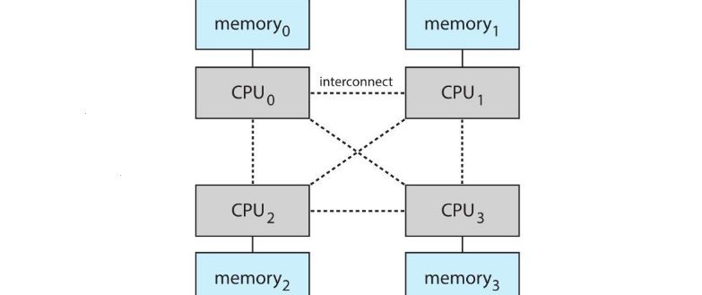
Structure
Operating-System Structure
- 多道程序设计Multiprogramming：提高效率/CPU利用率。部分任务在内存中，多个任务通过job scheduling选择当前任务；当某个任务等待IO的时候，其他任务可以执行；
- 分时/多任务Timesharing/Multitasking：交互性好/响应时间低。需要CPU scheduling切换任务，当内存放不下所有的进程可以用swapping或者Virtual memory；
Operating-System Operation
- Interrupt driven by hardware; Software error or request creates exception or trap; 其他问题例如：无限循环、进程间相互修改，两种保护方法
- Dual-mode：user mode 和 kernel mode。保护操作系统，用到Mode bit表示不同的模式。
- Timmer：用来阻止无限循环和进程无限占用资源。通过设置一个周期，程序运行超过周期就中断。
Main parts
Process Management
- 进程是activity entity；程序是passive entity；进程是执行的程序。进程结束需要回收reclaim任何可用资源。
- 单线程进程：有一个程序计数器记录下一条指令的地址。
- 多线程进程：每个线程都有一个程序计数器。多个进程通过复用CPU并发执行。
- 活动：增删用户和进程、挂起Suspend/恢复Resume进程、提供同步synchronization和通信communication的机制、提供死锁deadlock处理机制。
Memory Management
- 数据和指令在使用之前必须在内存之中。
- 活动：跟踪当前使用部分、数据移入移出内存、申请分配空间。
Storage Management
- 逻辑上统一表示 file，文件通常被组织到目录中；
- 文件系统的管理：
- 访问控制/权限：确认谁可以访问什么；
- 活动：增删操作文件和目录、文件映射到磁盘/辅存、文件备份到稳定存储介质中；
- 海量存储管理：
- 磁盘管理主存放不下的内容，速度取决于磁盘子系统和他的算法；
-
活动：空闲空间、存储分配、磁盘调度；
-
IO子系统：
- 缓存buffering
- 快缓存caching
- 假脱机spooling
- 统一接口
- 驱动程序
- OS Purposes
- 抽象、复用、隔离、共享、安全、性能、跨平台使用
OS Structures:ok:
OS Services
User
- 用户接口：界面、命令行CLI、交互式、脱机式批处理.bat文件
- 程序执行、错误检测、进程交流
- IO操作
- 文件系统控制
System
- 资源分配
- 记录Logging/Accounting
- 保护
System call
- API 比系统调用高级，API是更高级的封装, JVM，
-
实现
-
系统调用表
- 参数 三种传递方式：:imp:
- 参数放到寄存器中；
- Parameters stored in a block, or table, in memory,and address of block passed as a parameter in a reg；参数放到 内存/然后把内存其实地址放寄存器，用户模式和kernel模式的内存是共享但是有隔离，实际要考虑虚拟地址转换；
- 栈；Parameters placed, or pushed onto the stack by the program and popped off the stack by the OS
-
系统调用分类
-
进程控制
-
文件管理
-
设备管理：控制 io
-
信息维护
-
交流
-
保护
系统程序
大多数的系统程序为系统调用提供接口，其他的可能更复杂；
- 文件管理：文件修改等
- 状态信息：时间，磁盘空间，日志等
- 编程支持：编译器、汇编器、调试器
- 相互交流：设备驱动
OS 设计和实现
- 首先进行目标设定，多方因素影响(硬件，系统类型)，not solvable
- 策略和机制分离：
- 2.6.2(V-10) Policy(策略：要做什么事) Mechainism(机制：达到目的的手段)。例如Linux中的配置文件
- 系统应该定义的是机制，提供工具而不是使用方式。策略交给用户决定。
- 分离的目的：可以让同样的机制之上定义不同的policy，别写死，不灵活
OS 结构
-
Monollrhic 宏内核：包括IO，文件等管理，CPU等，运行在内核态
-
代表：linux
- 优点：模块调用交流会更方便，系统调用效率高
-
缺点：安全性不好，隔离比较弱，模块耦合高，调试维护难度大 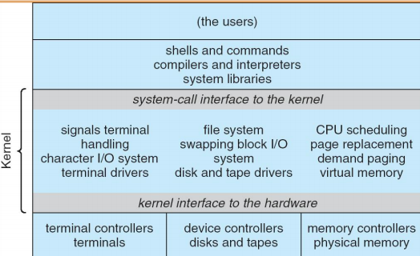
-
Microkernel 微内核：CPU调度，内存管理，进程交流，不包括文件存储等，运行在内核态
-
缺点：模块调用会有额外开销overheaed(主要是和用户模块打交道时产生的)，系统服务等更复杂，上下文切换不便捷
-
优点：安全性较高更稳定，隔离度高可移植性可扩展性高 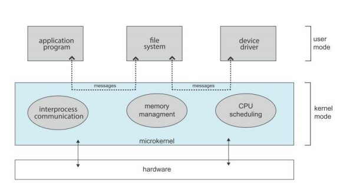
-
Hybrid 混合内核：Darwim(Windows, MacOS)
-
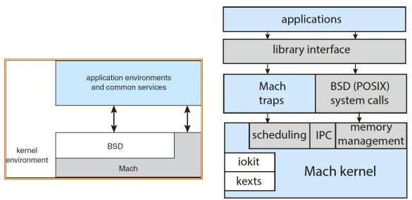
- BSD 可以提供 API 接口
- Mach 可以在微内核的基础上扩展，本质上还是微内核
-
目的：兼容宏内核的高效，微内核的模块化
-
Layered Approach 分层方法：逻辑分层，
-
上层调用下层的服务，不允许跨层调用，只能一层层来，
- 优点：封装好，方便调试和维护
-
缺点：调用效率会降低，跨层通讯额外开销，且逻辑分层不明确
-
Modules 模块化：
-
Loaded Kernel Module 可加载内核模块 .ko
-
优点：可扩展能力，简化实现和设计，方便维护
-
其他结构：
-
Exokernel 外核：极致微内核，只提供低级硬件操作；
-
很高的定制化，其他的资源管理通过用户态library实现；
-
性能很高，但是library定制开发实现难度大，兼容性差很；
-
学术上好，实现上难；
-
-
Unikernel: 用户程序在启动的时候就启动了，性能很高，有点像是容器
- 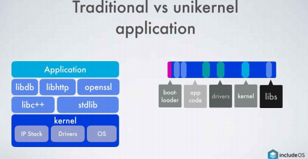
Virtual Machine
- 逻辑上极致的分层，把物理资源也做了分层，虚拟映射；
- 在虚拟化平台上面构建不同的操作系统，叫全虚拟化 Type2 Hosted Architectured好处：更方便使用，好切换，和当前OS兼容
- 在物理的硬件上面直接运行不同的系统，硬件辅助Type1 Bare-Metal Architectured 好处：更高性能、和硬件直接接触、安全性更高没有HostOS干预
- 还有嵌入式的虚拟机，底层应用，例如Type0 需要特殊硬件支持 Intel amd
- Java虚拟机JVM，一次编译，多次执行，多线程支持，类库
不同技术的对比：
- VM：具有隔离性，但又资源消耗问题，启动时间更长
- Linux Container：容器技术，更轻量级，定制化配置
- Unikernel：生态比较小，兼容性更差
OS Startup
阅读
- Bootstrap program (a.k.a.bootstrap loader),code stored in ROM, locates the kernel, load it into memeory
- 有时需要两个过程 首先 boot block at fixedlocation loads bootstrap loader，其次 bootstrap loads kernel
Processes:ok:
Process Concept
- 概念：进行当中的程序，例如
- 批处理Batch Jobs(单道批处理、多道批处理)
-
分时系统Time-Sharing/Multi-tasking Processes/Tasks
-
包含：文本(代码)、数据(全局变量)、栈(函数参数，返回地址，局部变量，静态变量)、堆(动态变量的申请和释放)、程序计数器(PC) 这里堆和栈只是一个地方，不是数据结构
-
状态：new、 running正在用CPU、 ready(已经 loaded 内存)、 waiting/blocked有IO等事件、 terminated结束
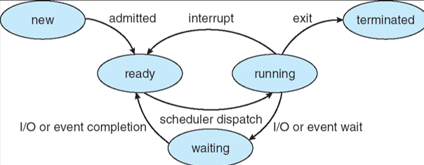
-
PCB：每个进程记录在PCB中 Process Control Block(进程状态等信息)
- 包含：状态、PC、CPU寄存器的内容、CPU调度信息、内存管理信息、计数统计信息
- 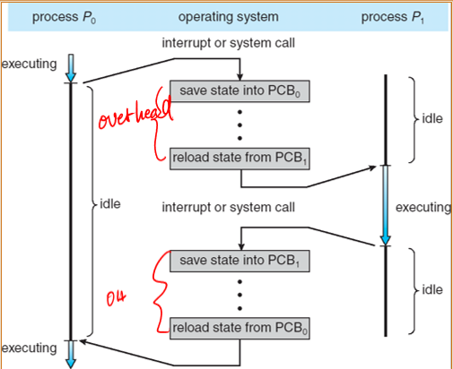
- 从图上可以看出，PCB的换入和换出造成了额外的开销，这是必要的；
- 其他补充：延迟中断的手段、进程状态的切换、原子性操作；
Process Scheduling
- 数据结构：链表实现 queue(Job Ready Device(s)) -- 进程漫游(migrate)在不同的队列
- job queue: all set of processes，所有的进程
- ready queue: ready/waiting to execute, in main memory，准备好要执行
-
device queues: waiting IO devices，被阻塞了
-
Schedulers：一段程序
- 长期调度、决定了degree of multiprogramming（Unix和Windows不采用长期调度）
- 短期调度、非常频繁 frequently
- 补充：medium 换入换出
- 进程的特性：I/O-bound process 和IO强相关、 CPU-bound process 和CPU强相关
- 上下文切换：放在PCB中的信息，两个不同的运行中的进程
Process Operation
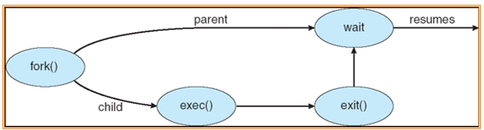
- 进程创建：父进程创建子进程、....资源共享（全部、部分、不共享）、并发执行，父进程等待子进程结束
-
fork 子进程 -> 进程树
- 资源共享：父进程和子进程(共享全部、部分、不共享)
- 执行形式：父进程和子进程(允许并发，必须等待)
- Address space 复制父进程的地址空间，新的pid
- system call 替换内存空间
- Termination
-
exec
- 替换当前进程
-
进程终止
- exit：执行结束的时候
- abort：parent终止子进程执行
- parent进程结束后，一些OS不允许子进程继续cascading termination
- parent进程结束后，一些OS允许子进程变成孤儿进程
Cooperating Processes
- 独立进程不会影响相互的执行，协作进程可以互相影响执行
- 好处：信息共享、计算迅速、模块化、方便
- Producer-Consumer
- 主要问题：数据和信息的同步
Communicaton(IPC)
IPC : Inter Process Communication 进程间通信
最小化共享资源，处理错误，同步机制
-
共享内存，同步状态，速度快，互斥控制，缺点：需要数据拷贝，额外开销，容易产生冲突
-
消息队列，消息传递，缺点：速度慢
-
Direct Commucation: PQ两个实体之间只能有一个Link，通常是双向的
-
Indirect Commucaiton: mailboxes/ports，每个pair之间可以有多个Link，可以是双向或单向
- 问题：一写多读？Solution
- Synchronous: 阻塞， send和receive都要等待直到完成通信
-
Asynchronous: 异步(多线程)，不阻塞，不等待，提高整体效率
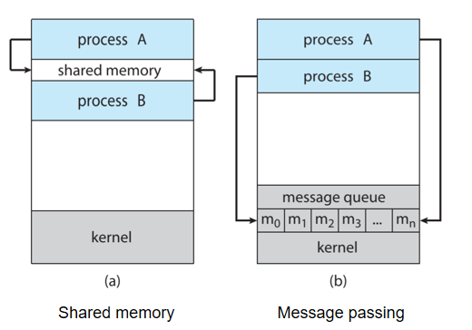
-
管道/套接字...commucation link? shared-mem or sys_bus? logical?
-
Buffering:
Threads:ok:
Overview
-
responsive 最求更高响应
-
small pieces 交互性更高
-
peek/check 效率不高
-
thread 进程内部多线程，交互性高且效率高
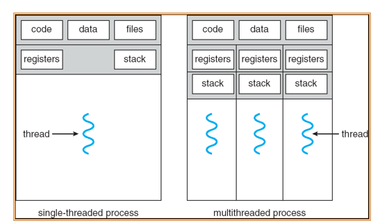
-
线程是CPU调度执行的最小单位(TCB用来调度)
-
线程三个状态：就绪、运行、等待
Multi-thread
线程的好处
- 响应好、Responsiveness
- 资源共享、memory for code and data can be shared
- 资源节约、creating processes are more expensive
- 提高并发/实现并行、Utilization of MP Architectures利用多核架构
User Threads
- 用户线程库：user-level threads library ULT
- 内核无感，只是用户的代码逻辑
- 好处：不需要状态的转换(只是进程内部的切换，有现成库管理)
- 缺点：某一个线程系统调用后可能会阻塞其他的线程，能够创建的线程有限的
Kernel Threads
- kernel threads KLT 执行的载体
- 好处：内核可以直接调度，高效切换
- 缺点：状态的转换，额外开销
映射模型
- 多对一：更高效，user thread <-> kernel thread 例如JVM，多个用户拒线程映射到一个内核级线程
- 一对一：并发好，额外开销；主流OS支持 例如Linux /Windows XP/ Solar
- 多对多：更灵活LWP ID 例如 Solar
- Two-level Model: 两种级别叠加：同时存在一对一、多对多
Threading Issues
语义的变化
- fork() 线程应该复制这个进程的所有线程，还是只复制调用fork的线程？吸血系统有两个版本的fork
- 复制一个：省内存空间、线程同步问题？
- 复制全部：数据一致性保证
- exec() 替换进程的映像，整个进程都会被替换
线程取消
- 进程 termination
- 线程 Thread cancellation
- 异步：立即取消线程 可能会资源泄露
- 延后：间断性检查flag判断要不要取消 但是会有额外开销
信号处理
- 信号处理函数、回调函数
线程池
- 预先创建、等待被分配、可以被复用
- 优点
- 响应速度会更高
- 资源利用率高
特定数据
- TLS 线程池维护
调度激活
- 上调用 upcalls
CPU Scheduling:ok:
从ready queue 到 running queue
 调度的资源是CPU、调度的对象是进程/线程
调度的资源是CPU、调度的对象是进程/线程
Basic Concepts
- Goal: Maximum CPU utilization obtained with multiprogramming
- CPU burst:CPU执行时间; IO burst: IO执行时间;
- CPU bound: CPU-密集型进程; IO bound: IO-密集型进程;
- 什么时候进行CPU调度(下面四个都是非抢占式)：
- 从running state 到 waiting state
- 从 running state 到 ready state
- 从 waiting state 到 ready state
- 进程终止的时候
- 抢占 or 非抢占 preemptive?
- 分配程序：Dispatcher，把CPU的分配权交给短期调度程序
- 切换上下文
- 切换到用户模式（非必须）
- 跳转到合适的位置
- Dispatch latency ：分配延迟
Scheduling Criteria
- CPU利用率
- 吞吐率：单位时间中执行完成的进程数量
- 周转时间 turnaround time：执行特定进程的时间
- 等待时间 waiting time (在ready queue里面的时间，不是waiting state里的时间)
- 响应时间 response time (从提交到第一次响应的时间)
Scheduling Algorithms
FCFS
- 算法：先来先服务
- 优点：公平、简单
- 缺点：
- 护航效应Concoy effect：所有进程都在等待一个大进程
- 可能导致IO与CPU的空闲
- 对长进程有利，对CPU-bound进程有利
SJF
- 算法：shortest-Job-First 两种可以抢占/非抢占
- 非抢占：等当前运行完
- 抢占：也叫做SRTF Shortest-Remaining-Time-First
- 问题？怎么知道进程的cpu-burst/剩余时间呢？指数平均法
$$ t_{n+1} = \alpha t_n + (1 - \alpha)t_{n-1} + ... + (1+\alpha)^jt_{n-j} + ... + (1-\alpha)^{n}t_0 $$
- SJF是平均等待时间最优的
- 可能会导致饥饿 starvation
- 对短作业有利
Priority Scheduling
-
算法：优先级调度，抢占/非抢占
-
问题：静态优先级调度会带来饥饿的问题，可能会导致进程永远无法执行
- 解决方法：Aging老化、动态优先级，随着时间进程的优先级提高
特殊的优先级调度：高响应比HRRN (非抢占的，因为需要计算等待时间和执行时间) $$ P = \frac{T_{wait}+T_{CPU}}{T_{CPU}} $$
- 缺点：要计算时间
- 优点：减少饥饿，提高交互性
Round Robin (RR)
- 轮转调度 Quantum时间量 (抢占)
- 比SJF等待时间更高，比SJF响应会更好
- 应用：分时系统/MultiTasking
- q的大小：大FCFS，小overhead高；
多级队列
把ready就绪队列划分成几个不同的队列，例如：foreground process、background process
不同队列之间调度方式
- 优先级调度，例如：先用前台调度再用后台调度，可能导致饥饿
- 时间片划分调度，例如：80%前台RR调度、20%后台FCFS调度
多级反馈队列
进程可以在多个队列之间移动，Aging可以通过这种方法实现。
需要的参数有：队列的个数、每个队列的调度方式、判断进程升级/降级、判断使用的队列
- 设置多个就绪队列，优先级递减
- 优先级高的队列，进程时间片越短
- 每个队列都采用 FCFS ，若在该时间片完成，则撒离系统，未完成，转入下一级级队列
- 按队列优先级调度，仅当上一级为空时，才运行下一级想·
多处理器调度
- 假设同构
- 非对称：一个CPU调度，剩下的执行，可靠性不高
- 对称：SMP
Real-Time Schedule
- 软实时/硬实时(一定在ddl前运行完，要求更高)
- 调度方式
- 最早截止时间优先
- 最低松弛度优先
- 速率单调调度
Thread Shceduling
- 本地调度：线程库，基于优先级LWP
- 全局调度：多对一(等于进程调度)、一对一
常见操作系统的CPU调度策略：
- Solaris：优先级0-59
- Linux:分时/软实时、Win-XP如下：
- Windows XP： interrupt masks、 spinlocks (busy-waiting semaphore)、dispatcher objects
- 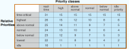
- Pthreads：mutex locks、condition variables、 extensions（read-write locks、spin locks）
Process Synchronization:ok:
Basic
- 进程同步：解决协作进程在并发访问同一个数据时候的不一致性问题，需要一些机制
- 临界区问题：临界资源 临界区 ，协作进程可能会互相应影响、例如生产者消费者问题
-
竞态条件：共享变量数据不一致问题（例如，counter）
- defination：a situation in which a memory location is accessed concurrently, and at least one access is a write.
- 注意：critical section problems in OS kernel
-
Solution to Critical-Section Problem
- 互斥、空闲让进、有限等待、(让权等待)
-
同步机制：软件、硬件、信号量、管程
软件机制
前面四个都是针对两个进程之间的同步，最后的面包房算法是针对多个进程之间的同步
单标志法
- turn=i 允许Pi进入；结束后turn=j交给Pj；
- 必须轮替进入，不满足空闲让进；
- 互斥 ~~空闲让进~~ 有限等待
双标志后检查法
-
flag[2]：flag[i]=true表示进程Pi想进入；结束后flag[i]=false允许对方进入；
-
进去之前前表达自己意愿，在询问对方想不想进入；
flag[i]=true; // 先设置
while( flag[j] ); // 后检查
critical section
flag[i]=false;
remainder section
-
可能导致双方都不能进入，违反空闲让进
-
互斥 ~~空闲让进~~ 有限等待
双标志先检查法
- flag[2]：flag[i]=true表示进程Pi想进入；结束后flag[i]=false允许对方进入；
- 进去之前先询问对方想不想进入，然后在表达自己的意愿；
while( flag[j] ); // 先检查
flag[i]=true; // 在设置
critical section
flag[i]=false;
remainder section
- 违反互斥，不用交替进入
- ~~互斥~~
Peterson's Solution:imp:
- 使用 trun + flag[2]，结合单标志法和双标志后检查法，首先表达自身意愿(flag[]=true) 之后设置自身要进入 (turn=0/1) ；turn 只能等于一个值，因此会谦让对方进入；若一方不想进入，则其 flag[i]=false ，对方可直接进入；
flag[i] = true;
turn = j;
while ( flag[j] && turn == j);
// CRITICAL SECTION
flag[i] = false;
// REMAINDER SECTION
- 互斥 空闲让进 有限等待 都满足
- 问题：现在的编译器核能会调整顺序；
- 解决方法：使用内存栅栏；memory barrier
```js(3) flag[i] = true; turn = j; asm(“mfence”); while ( flag[j] && turn == j);
#### Bakery Algorithm
- 思路：排队叫号
- boolean choosing[n]: 表示进程是否在取号；初始 false 。
- int number[n]: 记录每个进程取到的号码；初始 0
- （ a ， b ）＜（ c ， d ） : (1) a ＜ c, or (2) a==c 且 b ＜ d
- 互斥 空闲让进 有限等待
### 硬件机制
> **注意：下面的代码是硬件实现的，表示执行的逻辑，如果说是自己手动实现的这些代码是不能够完成同步的。**
#### 关中断法
- 进入临界区前直接屏蔽中断，保证临界区资源顺利使用；使用完毕，打开中断；
- Uniprocessors，可以disable interrupts
- 只适用于但CPU系统，多处理器同步问题
- 并发性降低，效率低，资源利用率低
- 安全性低 稳定性低，关闭终端导致一些重要请求错过了
- provide special atomic hardware instructions
- `Atomic = non-interruptable`
#### TestAndSet 指令
```cpp
boolean TestAndSet (boolean *target) {
boolean rv = *target;
*target = TRUE;
return rv:
}
while (true) {
while ( TestAndSet (&lock ))
; /* do nothing*/
// critical section
lock = FALSE;
// remainder section
}
- 互斥 空闲让进 ~~有限等待~~
Swap 指令
void Swap(boolean *a, boolean *b) {
boolean temp = *a;
*a = *b;
*b = temp;
}
while (true) {
key = TRUE;
while (key == TRUE)
Swap(&lock, &key);
// critical section
lock = FALSE;
// remainder section
}
- 对每个临界资源， swap 设置一个全局 bool 变量 lock、每个进程设置局部变量 key
- 互斥 空闲让进 ~~有限等待~~
CAS 指令
共享lock变量初始化为0
int compare_and_swap(int *value, int expected, int new_value) {
int temp = *value;
if (*value == expected)
*value = new_value;
return temp;
}
while(true){
while (compare_and_swap(&lock, 0, 1) != 0)
; /* do nothing */
/* critical section */
lock = 0;
/* remainder section */
}
满足Bounded-waiting的算法如下所示：
while (true) {
waiting[i] = true;
key = 1;
while (waiting[i] && key == 1)
key = compare_and_swap(&lock,0,1);
waiting[i] = false;
/* critical section */
j = (i + 1) % n; // 遍历所有的进程
while ((j != i) && !waiting[j]) // 这个进程不想要进入临界区
j = (j + 1) % n;
if (j == i) // 遍历完了所有的其他进程都执行完了，就轮到了自己执行
lock = 0; // 放开锁
else // 其他的程序也想要进入，设置为waiting=false他就跳出了while循环开始执行
waiting[j] = false;
/* remainder section */
}
- Boolean waiting[n]: 排队队列
- 性质：Executed atomically
- 互斥 空闲让进 有限等待
Mutex 锁
- First acquire() a lock
- Then release() the lock
- Calls to acquire() and release() must be atomic 必须是原子性操作
- spinlock自旋锁：一种需要持续占用CPU检测的锁，会有下面这种问题
- 问题：busy waiting，占用CPU，在单核系统中不能实现
硬件实现的优点：
- 适用于任意数目的进程，在单处理器或多处理器上
- 简单，容易验证其正确性
- 可以支持进程内存在多个临界区，只需为每个临界区设立一个布尔变量
硬件实现的缺点：
- 耗费 CPU 时间，不能实现“让权等待”、可能导致 忙等待 busy waiting，例如：自旋锁
- 可能不满足有限等待：从等待进程中随机选择一个进入临界区，有的进程可能一直选不上
- 可能死锁
信号量机制:imp:
- 满足让权等待、解决 busy waiting
-
通过两种原子性的操作：
- wait() signal() / P() V()
-
种类：整形 二进制 其他And等（可以用二进制信号量实现计数信号量）
实现互斥(不能同时访问)，如下：
Semaphore S
Wait (S);
Critical Section
Signal (S);
Remainder Section
实现同步(限制先后顺序)，如下：两个进程满足S1先执行、S2后执行
// P1
S1
Signal (S);
// P2
other sentenses
Wait (S);
S2
信号量的初始化
- 互斥：初始值为1，二进制信号量
- 同步：计数型信号量，信号量的个数=需要同步资源类型数、信号量初始值=该类资源个数
信号量的实现
实现信号量要保证：wait()和signal()是原子性操作、临界区问题（就类似前面软件/硬件实现思路）
-
忙等类型：wait + signal，进程在等待信号量时，会进行忙等，不释放 CPU。这种方法在多核系统中可能有用（因为一个核忙等时，其他核仍然可以工作），但对于单核系统非常浪费资源。
-
P 和 V 在不同的CPU上跑
-
生产者V太少，P会一直转

-
-
非忙等类型：wait +signal + 等待queue(操作 sleep wakeup)，进程在等待信号量时，会被加入信号量的等待队列，并进入睡眠状态，在这种情况下，进程会让出 CPU，等到条件满足时，由操作系统唤醒它，避免 CPU 时间的浪费。
-
每个信号量包括两个部分：value + pointer to a linked-list of PCBs
-
问题：额外开销sleep的时候
-
问题：lost wakeup
-
解决：调整锁在while之前 + sleep(s, &s->lock)释放锁在while中间

-
死锁问题：两个或多个进程无限等待
饥饿问题：一个进程可能无法从等待队列中出来
经典问题 1 生产者消费者问题（有界缓冲区问题）N个缓冲区，保持互斥访问
需要三个信号量来实现：一个互斥初始化=1、一个full初始化为=0、一个empty初始化=N
注意：两个wait的顺序不能变，否则会逻辑不正确（例如Producter还没生产，Consumer就先mutex，然后发现一直在wait(full)，但是Product因却一直在wait(mutex)，造成死锁
singal的顺序可以变的，不会影响逻辑正确性
// Product
while(true){
wait(empty);
wait(mutex);
//add to buffer
signal(mutex);
signal(full);
}
// Consumer
whiel(true) {
wait(full);
wait(mutex);
//remove from buffer
signal(mutex);
signal(empty);
}
经典问题 2 读者写者问题（并发进程的共享）读者只能读、写者可以读也可以写、允许多个读者、只允许一个写者、读者有限
需要一个整型变量：记录读者数量初始化=0（因为这里有多个用户的共享）
需要两个信号量实现：一个互斥访问读者数量初始化=1、一个互斥写初始化为1
// Writer
while(true) {
wait(wrt);
// writing
signal(wrt);
}
// Reader
while(true) {
wait(mutex);
readcount++;
if(readcount==1) wait(wrt); /*因为wrt初始化=1,读和写要互斥,所以第一个读者来时wait(wrt)*/
sinal(mutex);
// reading
wait(mutex);
readcount--;
if(readcount==0) signal(wrt); /*没有读者就是放这个信号量*/
signal(mutex);
}
经典问题 3 DH哲学家就餐问题（共享一碗米饭、五根筷子）
解决方法很多：
- 只允许 4 个同时吃饭；
- 其中一位反序拿筷子；
- AND 信号量；
- 奇数 ID 和偶数 ID 设置相反拿筷子顺序
管程机制
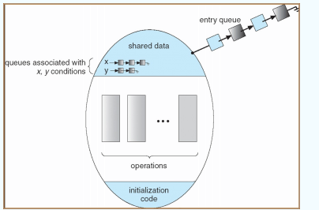管程Monitors是一种高级的抽象，进程同步的有效mechanism；同一时间只允许一个进程在Monitor中active；
- condition variables条件变量：x.wait() x.signal() 里面没有变量，只有condition x；
常见操作系统采用的同步方法：
- Solaris：adaptive mutexes、condition variables and readers-writers locks、turnstiles
- Windows XP： interrupt masks、 spinlocks (busy-waiting semaphore)、dispatcher objects
- Linux：disables interrupts（short critical sections） 、semaphores、spin locks
- Pthreads：mutex locks、condition variables、 extensions（read-write locks、spin locks）
Deadlocks:ok:
Deadlock Characterization
-
如果同时满足下面四个条件就会产生死锁：
-
互斥Mutex
-
请求保持Hold and Wait
-
不剥夺No preemption
-
循环等待Circular wait
-
系统模型：资源类型R、每个资源个数W、每个进程P；进程可以申请/使用/释放资源；
-
资源分配图：V表示资源或者进程；E表示P申请(P->R)或占有(R->P)资源；
-
图没有环：没有死锁
-
图有环：如果每类资源只有一个实例->有死锁；如果每个资源有多个实例->具体分析；
-
解决方式：
-
Prevention、Avoidance
- Detection、Recovery
- Ignore (used by most OS)
Deadlock Prevention
- 破坏四个必要条件之一来防止死锁发生
- ~~Mutex~~：共享资源可以破坏互斥条件，通过允许多进程同时访问预防死锁；非共享资源无法破坏互斥条件，不能用这个方法预防
- ~~Hold and Wait~~：保证进程请求资源时候不持有任何其他资源（资源利用率低、可能饥饿）
- ~~No preemption~~：进程持有的资源可能因为其他进程的请求而释放、被抢占的资源加到了进程等待的资源列表、进程仅在当他可以重新获得旧资源的时候重启
- ~~Circular wait~~：确定所有资源的整体顺序，申请按照编号的顺序来；total oedering;
Deadlock Avoidance
-
需要多一些先验信息：priori information
-
每个进程 declares 他需要的资源的一个最大的数量；
- Dynamically 检测 the resource-allocation state 确保 never 进入循环等待；
-
state通过三个数字来确定：available、allocated、maximum demands；
-
Safe state：当一个进程申请 available 的资源的时候，系统必须判断是否这个申请会使系统离开安全状态；
-
如果存在一个进程序列，可以保证：进程需要的资源 >= 前面所有进程占有的资源+系统剩余资源
- 这样入股某个进程当前需要的资源不是立即有空的，就可以等前面进程释放资源之后利用；若干个人
- 安全状态和死锁的关系？
-
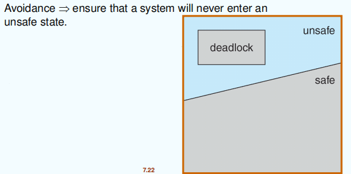
-
避免的算法-单实例：使用资源分配图
-
进程必须先声明资源先加上边：Claim edge，虚线
- 当进程申请资源的时候：Claim edge->Request edge
- 当资源被分配给进程时：Request edge->Assignment edge
- 当资源被进程释放之后：Assignment edge->Claim edge
-
环检测：包含Claim edge
-
避免的算法-多实例：使用银行家算法Dijistra
-
假设：多个实例、先声明最大使用量、申请资源必须等待、进程得到全部资源后必须有限时间返回
-
c ResourceRequestAlgorithm () { /* Step 1: check request is valid? */ if(Request[i] <= Need[i]) goto step2; else throw error; /* Step 2: check resource is enough? */ if(Request[i] <= Available[i]) goto step3; else wait; /* Step 3: test to allocate, and check safes state */ Pretend to request: call SafetyAlgorithm; } -
n个进程、m个类型；Available/Max/Allocation/Need；Need = Max - Allocation;
-
```java SaftyAlgorithm () { Work[m]; / Step 1: initial work = avaible / Work = Available; for (j=0->n) Finish[j] = false; / Step 2: try to satisfiy one's need / Find i : Finish[i]==false && Need[i][] <= Work[]; if(No such i) goto step4; / Step 3: update available reources / Work[] += Allocationi[i][]; Finish[i] = true; goto step2; / Step 4: all needs satisfied / if all Finish = true System is in a safe state; }
```
Deadlock Detection
-
允许系统进入死锁状态
-
单实例：维持等待图（pi->pj表示pi在等待pj）
-
间断性的调用算法，来检测等待图中有没有环
- 检测环的算法需要n^2^ (n是图中顶点个数)的操作
-

-
多实例：
-
Available [m] 表示空闲的个数
-
Allocation [n] [m] 表示已经占有的个数
-
Request [n] [m] 表示申请的个数
-
下面的算法和安全算法很像：把Need换成了Request
-
c DetectinAlgorithm () { /* Step 1: initial work = acaible */ Work = Avaible; for(i=1->n) { if(Allocation[i] != 0) Finish[i] = false; else Finish[i] = true; } /* Step 2: try to satisfy one's need */ Find i: Finish[i] = false && Request[i][] <= Work[]; if(no such i) goto step4; /* Step 3: update the */ Work = Work + Allocation[i]; Finish[i] = true; goto step2; /* Step 4 */ if(exists i such that finish[i]==false) System is in deadlock state && P[i] is deadlocked } -
检测算法需要O(mn^2^) 的操作
Recovery from Deadlock
- Process Termination：撤销部分甚至全部死锁进程，释放资源
- Abort all deadlock processes;
- Abort 一个进程直到死锁环消除了；
- 按照什么顺序Abort？
- 进程优先级
- 结束时间、执行时间
- 使用这个进程的资源格式
- Process Preemption：把部分进程挂起，剥夺其资源
- 选择一个victim，让他立即释放资源
- Rollback 回到安全的状态
- Startvation，一些进程可能一直被选为 victim 还有回滚的次数
- 进程回退法：让一个进程或多个进程回退到避免死锁的地步，释放中间资源
Main Memory:ok:
Background
-
内存发展
-
Drum memory 磁鼓存储器
-
Delay Line Memory 延迟线存储器
-
Core Memory 磁芯存储器
-
Semiconductor ROM/RAM 半导体：DRAM, SRAM, ROM(boottrap), EPROM
-
内存墙
-
内存比处理器慢太多，消耗更多的能源
-
由于多核的发展，这个Gap甚至更大
-
NVMs：非挥发性存储器，非易失性存储器
-
PCM：箱变存储器
-
ReRAM/RRAM：电阻是存储器
-
内存计算：与传统的冯诺依曼的存写分离不同，增加效率
-
背景
-
程序必须：从磁盘加载到内存，放到处理器中运行
- 主存和寄存器是CPU能直接访问的存储介质
- 寄存器可以在一个时钟周期内访问
- 主存可能需要多个时钟周期内访问
- 高速缓存cache在主存和寄存器之间
-
内存的保护需要保证正确的操作
-
内存等级：
- 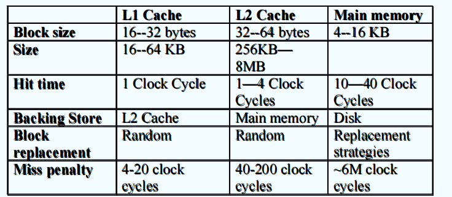
程序运行过程
- 编译器、连接器、装载器
- 编译时间：.c->.o（compiler）
- 载入时间：.o->.exe（linker、loader）
- 执行时间：（动态连接库）

- 不同过程的地址
- 符号地址：在源程序中的地址都是符号
- 可重定位地址：compiler绑定符号地址到可重定位地址(.o中的)
- 绝对地址：linker, loader将可冲定位地址绑定到绝对地址
- 地址空间：
- 逻辑地址：CPU产生的，也叫虚拟地址 LA/VA
- 物理地址：内存单元中可以看到的地址 PA
- 地址绑定：就是地址映射，从一个地址空间映射到另一个
- 绑定指令和数据到内存中的方式
- 编译时刻绑定：已知内存位置，产生绝对code，如果变化必须重新编译 LA=PA
- 装入时刻绑定：产生可重定位code，编译时刻内存位置未知 LA=PA
- 执行时刻绑定：需要硬件支持，直到运行时候再绑定 LA!=PA
- 基址寄存器和限长寄存器
- Base+Limit：定义了逻辑地址空间
- 内存管理单元：MMU，做VA到PA映射的硬件设备，发送到内存(PA)的时候把relocation寄存器(base register)加到每个用户进程产生的地址(VA)上
- 动态重定位：relocation，把CPU看到的逻辑地址转换成内存中的物理地址
- 动态装入：直到被调用的时候再装入，内存空间利用更好，不需要OS的特殊支持
- 动态链接：直到执行的时候再链接，使用stub来定位合适的内存库，把他替换成进程的地址来执行
- OS需要检查是否routine进程是在LA地址中的
- userful for：省空间、减少执行镜像文件大小、重新连接不需要的新库
- 也叫做shared libraries，共享库
连续内存分配
-
主存通常有两个分区：常驻在OS低内存例如中断向量，用户程序在高内存中
- relocation register 用来保护用户程序，避免改变操作系统的代码的数据，保存最小的物理地址，需要硬件的支持
- limit register 把一系列逻辑地址的范围，每个逻辑地址必须必Limit寄存器更小
-
MMU 内存管理单元，动态映射逻辑地址，从虚拟地址到物理地址的硬件设备
分配方式：
- Single Continous Allocation 单一连续分配：不并发，只运行一个
- Multiple-partition allocation 多分区分配：内存划分成不同的联系区域，叫做分区，每个分区存放一个进程。
多分区分配：
- 固定分区：

- 会形成分区内的内部碎片
- 可变分区、动态分区：动态划分内存，在程序装入内存时把可用内存“切出”一个连续的区域分配给该进程，且分区大小正好适合进程的需要。
- 存在Hole，即空闲块，在内存中随机分布，外部碎片
- OS需要保存的信息包括：分配的分区，空闲分区/空洞
- 动态分配的方法：first-firt(next-fit)、best-fit、worse-fit
- first-fit和best-fit比worse-fit在速度和空间利用上更好
- 其他方法：基于索引-快速适应、伙伴系统、哈希算法
碎片 fragmentation：
- 外部碎片：满足需求全部内存碎片、不连续
- 内部碎片：分配的内存比需要的内存更大，没有用到的大小就是
- 通过 compaction或者defragmentation可以减少外部碎片
分页 Paging:imp:
-
进程的逻辑地址空间可能是非连续的
- 把物理内存分成固定大小的块，叫做帧frome
- 把逻辑内存分成相同大小的块，叫做页
- 页表用来做 物理地址 到 逻辑地址的映射
- 会有内部碎片
-
地址转换方式：
- 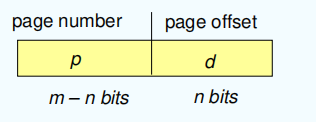
- 页号+页内偏移
- 逻辑地址空间大小 2^m^、页大小2^n^
-
硬件，CPU的逻辑地址，页表，物理地址，访问物理内存
- 硬件实现页表
- PTBR，页表寄存器，存放页表的地址
- PTLR，页表长度寄存器，存放页表长度
- 两次访问内存问题：第一次先访问页表、第二次访问内存数据（页表存在内存中）
- 解决方法：使用fast-lookup hardware cache/associative memory/ TLBS快表
- 转换时候，先去快表中找，命中就直接访问内存；否则再去页表中找，然后访问内存；
- EAT计算：
- 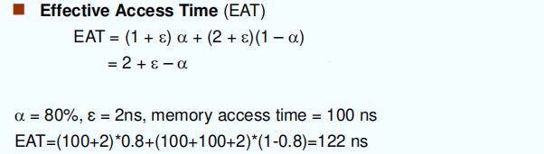
- 内存保护问题：通过页表中Valid-invalid bit
- valid表示相关的也在进程逻辑地址空间中，是合法的；反之类似；
- 共享页：
- 共享代码：只读的代码，对于所有的进程来说这种代码必须有相同的逻辑地址；
- 私有代码和数据，私有数据可以存在任意的地址空间中；
页表结构
- 分级页表Hierachical Paging
- 把逻辑地址空间转换到多级页表（Linux四级、Windows两级）那相当于把原来的页表也分一下页
- 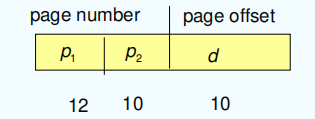
- 页表基质寄存器PTBR存放为高级的页表地址
- 好处：提高性能，程序不需要把所有的页表内容都放到
- 哈希页表Hashed Page Tables
- 在地址空间大于32位的时候用到
- 每一个页表项都有一个链表
- 更快，更省空间
- 倒置页表Inverted Page Tables
- 整个系统只有一张页表
- 但是查找会比较慢
- 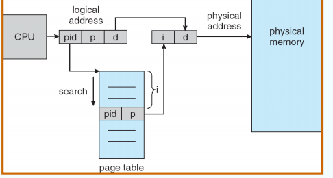
- 替换Swapping：从内存到Bakcing Store之间的交换
分段 Segmentation
- 内存管理支持按照逻辑单元来划分
- 例如：程序段、栈、局部变量、全局变量
- 段表：segment table 两种物理地址之间的映射 base limit
- STBR、STLR
- 保护：valid位、权限控制位
- 段的硬件：先判断然后转换
Virtual Memory:ok:
Background
- virtual memory system
- demand paging、page-repplacement algorithms、allocation pf page frames
- working-set model principle
Virtual memory
- 逻辑地址空间可能比物理地址空间更大
- 允许地址空间被多进程共享
benefits
- 通过把共享的对象映射到虚拟地址空间可以让多个进程共享系统库、共享内存、共享页
Demand Paging:imp:
缺页时系统运行的顺序：
- Operating system looks at another table (kept with PCB) to decide:? Invalid reference, abort? Just not in memory
- Get empty frame
- Swap page into frame
- Reset tables
- Set validation bit = v
- Restart the instruction that caused the page fault
- 需要时把页取到内存中：less IO、less memory、faster response、more users
- 需要某一页->reference to it：不合法/abort、不在内存/取到内存中
- lazy swapper：懒加载，用一页取一页
- eagle swapper：预加载，提前取相邻的几页，局部性原理
- valid bit：valid表示在内存中，invalid表示不在内存中，初始化所有都是invalid
-
当访问页表进行地址转换时候，如果发现是invalid就发生缺页终端page-fault
- 看其他表判断是不是valid
- 得到空闲帧，设置内容，重启
-
重启的问题Restart instruction：block move
-
EAT计算：缺页访问的性能
进程创建
-
使用虚拟内存在进程创建过程有好处
-
Memory-Mapped Files：
- 映射到不同进程中，实现对文件的共享
-
Copy-on-Write：
-
parent进程和child进程可以共享相同的内存页
-
COW允许更高效的进程创建方式-写时复制
-
因为复制操作可能会带来较大的开销
-
写时复制（缺页的时候并不直接就把所有内容进行复制）
-
Page Replacement
替换时系统运行顺序：
Find the location of the desired page on secondary storage.
Find a free frame:
If there is a free frame, use it.
If there is no free frame, use a page-replacement algorithm to select a victim frame.
Write the victim frame to secondary storage (if necessary); change the page and frame tables accordingly.
Read the desired page into the newly freed frame; change the page and frame tables.
Continue the process from where the page fault occurred.
- 在内存中替换页面的时候希望：缺页次数更少
- 阻止过度分配内存，通过缺页处理例程包含了页置换
- 使用修改modify/dirty位减少页面的传递（只有写过的在写回磁盘）
- 页置换是虚拟内存实现的方式，这使得虚拟内存可以比物理内存大很多
- reference string， 访问的页面编号的顺序
- FIFO：
- 依赖于访问页面顺序，替换掉数组中前面的一个，新的往后面插
- 问题：存在Belady‘s Anomaly， 内存更大，反而会有更多缺页异常
- Optimal：
- 往后看，选择后面最久会用到的替换，最优情况
- 问题：无法得知后面的访问顺序，用来对比评估其他的性能
- LRU：
- 往前看，选择前面最久没有用到的替换
- 实现修lao：
- 使用一个counter
- 栈实现用到了就移动带重新压栈/到栈顶,不用遍历
- LRU Approximation：
- Second chance/时钟算法：
- 循环地遍历 frames，并逐一检测 reference bit
- 如果是0，就选为victim
- 如果是1，就改写成0
- Enhanced Second-Chance Algorithm / NRU
- (0,0)(0,0)：没被用过，也没被修改过；
- (0,1)(0,1)：没被用过，但被修改过；
- (1,0)(1,0)：被用过，但没被修改过；
- (1,1)(1,1)：被用过，也被修改过；
- Second chance/时钟算法：
- 基于技术的置换：LFU、MFU
Allocation of Frames
- 固定分配：平均的分
- 优先级分配：可以允许有变化的分配方式
- 全局置换：会有为预测到的缺页异常
- 局部置换：会有其他进程不能用的空闲的帧
注意：固定分配和局部替换一起搭配
Thrashing
- 颠簸/抖动，进程频繁换入换出
- 解决 Trashing 的关键是避免频繁的页面置换，即确保有足够的内存供进程使用。为了减少 trashing，通常需要采取以下措施：增加物理内存 或 减少并发进程数，从根本上减少页面置换。
-
其他解决方法：
- 增加物理内存
- 优化页面置换算法
- 在 cpu 调度中引入工作集算法
- 动态调整进程的内存分配
- 限制并发进程数
- 内存压缩
-
Working-Set Model:imp: ?
- 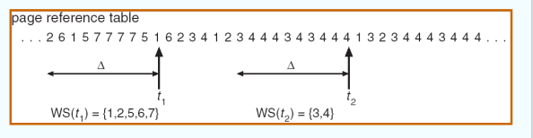
- WSS 工作集大小
- delta表示什么：间隔定时器的中断频率和工作集的实际变化之间存在时间差
Allocating Kernel Memory
- 从空闲内存池中分配，内核代码通常：
- 变长分配来减少碎片
- 分配连续的物理地址
- 许多系统对与内核代码不使用分页
File System Interface:ok:
Concepts
- File System Concepts: 控制数据如何在存储介质中存和获取的方式：命名、位置、元数据、访问原则
- File Concept: 连续的逻辑地址空间、连续的字节或者行等；类型：数据，程序；
- File Structure: None 单词或者字节的顺序、简单的结构（定长、变长）、复杂结构（结构化文档、可重定位文件）
- File Attrbutes:名字、唯一标识符、类型、位置、大小、保护、时间等，保存在目录结构中
- File Operations: 增删，读写，遍历，
- $Open(F_i)$：系统调用，搜索 F 目录项内容移动到内存中
- 返回一个打开文件表：有两种类型的，per-process table（当前文件指针、访问权限）、System-wide table（打开计数）
- 管理打开文件的一些数据：文件指针、打开计数、文件磁盘位置(cache of infofrmation)、访问权限等
- 文件锁：有共享锁和排它锁，有强制性和建议性（建议性的进程可以自己改变锁的状态）
- $Close(F_i)$：移动F的目录项从内存到磁盘中的目录结构
Access Methods
- 连续访问：rewind， reset，
- 随机访问/直接访问：index， relative files
Directory Structure:imp:
- 可以被看做是 symbol table 符号表
- 文件系统典型的组成：目录文件 + 文件
- 对目录的操作：find... , touch ...,
- 组织目录的来访问要考虑的问题：
- Efficiency: 快速访问
- Naming: 方便使用
- Grouping: 逻辑分组，e.g. Java程序...
- 单级目录：Syngle-Level Directory
- 两级目录：Two-Level Directory
- 树状目录：Tree-Structured Directories
-
绝对和相对路径名
-
无环图目录：为了文件的共享，有共享的子目录或文件
- 已经存在的文件的指针/link/别名
- 悬空指针：dangling pointer，解决办法：存着文件的引用？
-
新的目录项的类型：连接、Resolve the link可以定位文件
-
一般图目录：因为无环图目录需要别的算法来保证无环
- 重复搜索问题、文件删除问题
-
只允许link到不是子目录的文件、垃圾回收、使用环检测算法
-
软链接&硬链接 Soft Link vs. Hard Link
-
软链接：是单独的文件、只是指向了原来的文件的路径
- 有自己的FCB，他的数据包含连接到文件的路径
- 可以扩展文件系统，因为他只是存着文件路径
-
硬链接：是对现存文件的别名，他可以提高文件引用计数
- 源文件和硬链接指向相同的FCB
- 不可以扩展文件系统，不能为目录创建硬链接来阻止无环
File-System Mounting
- 文件系统告知有挂在才可以被使用
- mount point挂载点
File Sharing
- 多个用户共享文件
- 分布式系统中共享需要通过网络共享
-
NFS网络文件系统，是一个常见的分布式文件共享方法
-
用户ID 标识用户、组ID 方便控制访问权限
- 远程文件系统
- 使用网络：FTP、分布式文件系统、
-
使用C-S：客户端-服务器模型 NFS CIFS
-
Failure Modes
- 网络故障、服务器故障
-
NFS 是无状态协议，请求中包含了所有信息，允许简单的恢复但是更低的安全性
-
一致性语义：AFS/UFS/
Protection
- 访问类型：读、写、执行......
- RWX
- 通过分组控制权限
File System Implementation:ok:
File-System Structure
- 逻辑存储单元、存储相关信息
- 存在磁盘中
- 分层组织：
- 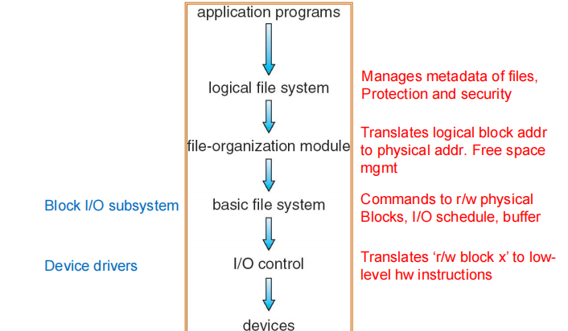
- 磁盘结构：
- 每一卷：引导控制块BCB
- 每一卷：卷控制块VCB
- 每个文件系统：目录结构（文件名在目录项中）
-
每个文件：文件控制块FCB（文件权限、时间、大小、指针）
-
内存结构：
- 挂载表
- 目录缓存
- 系统打开文件表
- 进程打开文件表
Virtual File System
-
VFS 提供面向对象的实现方式
-
VFS 允许不同的文件系统可以调用相同的API
-
API是对于VFS结构的，不是对不同的文件系统
-
vnode
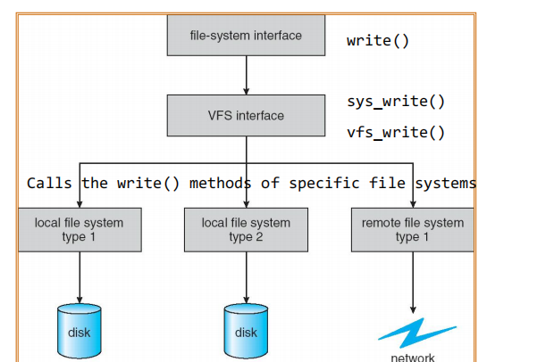
-
VFS四个主要对象：超级块、inode、dentry object、file object
Directory Implementation
- 线性链表
- 哈希表
Allocation Methods:imp:
- 连续分配
- 支持随机访问；
- 浪费空间、不方便改变文件大小
- 映射计算：LA/512 = Q ... R； 块号：Q，块内偏移：R；
- 改进：基于extent的系统，extent是连续的块，一个文件包含多个分区
- 链表分配：
- 每个文件是块组成的链表，块不一定要连续
- 不支持随机访问，不可靠
- 映射计算：LA/511 = Q ... R；块号：Q，块内偏移：R+1；
- 比尔盖茨：FAT 相当于是文件申请信息的缓存； 快速访问；哈希计算；
- 索引分配
- 把所有的指针放到一个索引块中，索引库爱中存放着所有用的块地址
- 需要索引表，支持随机访问
- 动态访问没有外部碎片，但是有索引快的额外开销
- 映射计算：LA/512 = Q ... R；索引块中的位置：Q，数据块中的位置：R；
- 改进：多级索引


Free Space Management
- Bit vector (n blocks) bit[i]=1表示为空闲状态 Can get contiguous space easily
- Linked list (free list) – see figure Cannot get contiguous space easily
- But basically can work (FAT)No waste of space
- Grouping – a modification of the Linked List
- Addresses of the n free blocks are stored in the first block.
- The first n-1 blocks are actually free. The last block contains addressesof another n free blocks
- Counting - Address of the first free block and number n contiguous blocks
Efficiency and Performance??
disk allocation and directory algorithms
- disk cache – separate section of main memory for frequently used blocks
- free-behind and read-ahead – techniques to optimize sequential access
- improve PC performance by dedicating section of memory as virtual disk, or RAM disk.
Mass-Storage Systems:ok:
Structure & Attachment
- 磁盘结构和相关定义
- Track:磁道
- Spindle: 主轴
- Sector: 扇区（geometrical sector多个扇区组成的扇形区域，track sector扇区）
- Cluster: 簇
- Cylinder: 柱面
- attachment类型：ATA、USB、SCSI(小型计算机系统接口)、SATA、FC
- 非易失性存储设备Nonvolatile Memory Device：SSD固态硬盘、读写有损耗，寿命有限
- 网络连接存储：Network-Attached Storage
- NAS : 不通过local连接例如总线，而是通过network连接
- NFS和CIFS是常见的协议、通过远程procedure calls实现
- 存储区域网络：在存储网络中比较常见、灵活性高
- 访问磁盘的时间：
- 寻道时间seek time，一般1-20ms
- 旋转时间rotational delay，一般0-10ms
-
传输时间transfer time，一般1ms/4KB
-
降低IO的关键：减少寻道时间、旋转时间
磁盘调度:imp:
- 操作系统负责硬件的高效运行，对于磁盘驱动说意味着比较快的访问时间和磁盘带宽
- 访问时间主要可以从：寻道时间和旋转时间来加速、寻道时间近似于寻道距离seek distance
- 磁盘带宽指 = 总的传输字节数/到最后一次传输的全部服务时间
- 算法：request queue，访问的磁道编号（最外面是1号）、距离
- FCFS：先来先服务，
- SSTF（Shortest-seek-time-first）：选择距离当前位置最近的磁道，可能饥饿
- SCAN：从当前开始移动到另一端尽头，再反向移动到另一端尽头
- LOOK：从当前开始移动到另一端最后一个任务，反向移动继续服务其他任务
- C-SCAN：提供更平均的等待时间，一直从起点到终点，重置到起点，继续单向
- C-LOOK：同上，一直单向，移动到最后一个任务重置到第一个任务，继续单向
- 选择调度算法：
- SSTF更常见、SCAN C-SCAN在负载重的系统上表现更好
- 在操作系统中，调度算法应该是一个单独的module，可以选择替换不同算法
- 一般默认选择SSTF或者LOOK
- 对于SSD来说最好的调度算法是：先来先服务，因为SSD读写比较快
Disk Management
- 格式化：替换连续的磁盘块
- 低级格式化low-level formatting/物理格式化：
- 逻辑格式化physical fromatting：新建一个文件系统
- 扇区备用处理坏快
- 引导：MBR主引导分区（引导代码、分区表）
Swap-Space Management
- 虚拟内存使用磁盘作为物理内存的扩充
- 两个交换空间的位置：普通的文件系统、单独的磁盘分区
- 匿名内存
RAID 结构
- Redundant Arrays of Independent Disk：独立磁盘冗余阵列
- RAID 有六种不同的等级
- RAID 0：没有冗余
- RAID 1：Mirror
- RAID 2：stripes data at the bit-level; uses Hamming code for error correction (not used).
- RAID 3：striped across multiple disks, with one dedicated parity disk that stores the parity information of all.
- RAID 4：Basically like RAID 3, but interleaving it with strips (blocks)
- RAID 5：parity bit 被分散地存到了不同的磁盘里。读写比较均衡。inexpensively reliability
- RAID 6：又加了一个 parity bit，也是分散存储。
- Mirror：通过冗余提高可靠性
- 镜像卷：mirrired volumn；非易失性RAM：NVRAM
- Disk striping：通过并行处理提高性能
- Bit-level: 位级分条，改善传输率
- Block-level: 文件的快分散在多个磁盘上，磁盘并行，增加吞吐量
- RAID(0+1)/RAID(1+0)：0表示分条，1表示镜像
- 先镜像在分条比较好：1+0更稳定
I/O Systems:ok:
Hardware
- 常见概念：
- 端口: IO设备与PC通信的通道
- 用于特殊的IO指令、Memory-mapped IO(设备控制regs映射到进程地址空间)9
- 端口寄存器：输入、输出、状态、控制
- 总线(菊花链daisy chain)：线路+协议，PCI总线、SCSI总线、扩展总线
- 控制器：SATA、SCSI、SAS controller
- 端口: IO设备与PC通信的通道
- 程序轮询：Polling
- 判断设备的状态：busy/Error/Ready
- Interrupts：中断I/O controller
- 中断处理器：缺页异常、Trap软件中断
- 可屏蔽中断 Maskable
- 六个步骤：
- 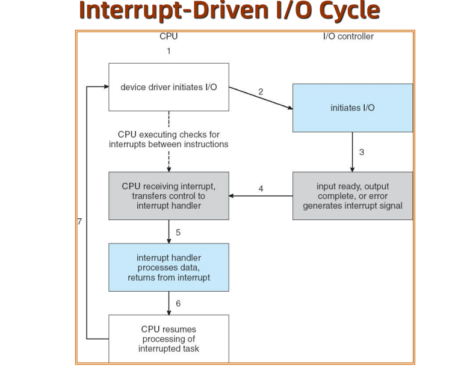
- DMA：直接内存访问 device controller
- 需要DMA控制器
- 使用可编程IO对于大的数据移动
- 可以绕过CPU，直接从IO设备传输数据到内存中
- 六步：
- 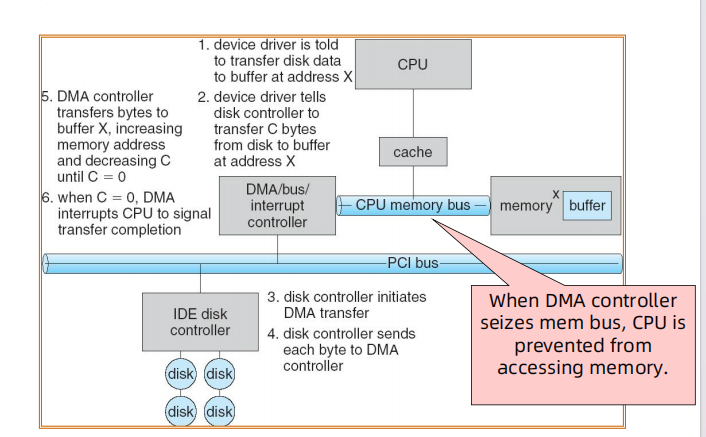
Application IO Interface
- IO系统调用封装设备的行为
- 设备驱动层隐藏了kernel中IO控制器的不同，字符流、块、顺序、
- 设备分类：
- 块设备：磁盘驱动器、可寻址
- 字符设备：键盘、鼠标、顺序端口
Kernel IO Subsystem
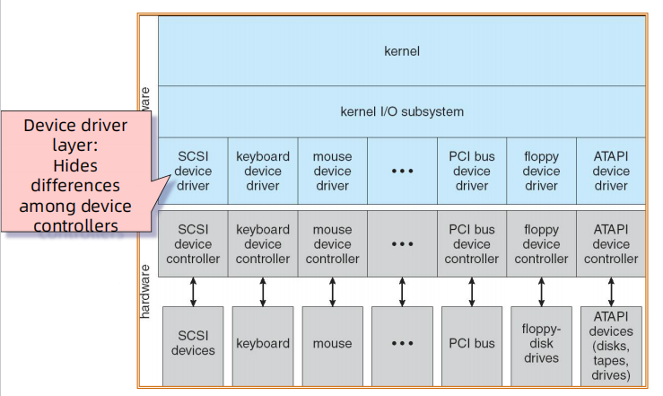
- 网络设备：Unix和系统包含套接字层
- 时钟和时间：ioctl
- 阻塞IO和非阻塞IO
- 阻塞IO：同步进程
- 非阻塞IO：异步进程Asynchronous 难以实现
内核IO子系统
- Scheduling：调度
- Buffering：缓冲，内存和设置之间的数据传输
- 类型：单缓冲、双缓冲、循环缓冲、缓冲池(内存实现)
- 设备状态表/设备控制表：Device Control Table、DCT
- mismatch of speed between modem & disk
- mismatch of transfer size
-
Caching：高速缓存
- Always just a copy
- Key to performance
-
Spooling：假脱机技术hold output for a device
- 在磁盘上面开辟一片空间，将独占设备改造为共享设备，并不是分配真正的物理空间
- 例如：打印机
-
Device reservation：提供设备独占访问exclusive access
- System calls for allocation and deallocation
- Watch out for deadlock
-
错误处理：
- IO保护：
- 数据结构：打开文件表、网络连接、字符设备状态
IO Request
- 使用系统调用来执行IO
- 考虑读一个文件的过程：
- 判断设备持有的文件（挂载表、磁盘符）
- 翻译设备表示的名称
- 从磁盘读取数据到内存
- 为请求的进程获取可用的数据
- 把控制权返回给进程
- 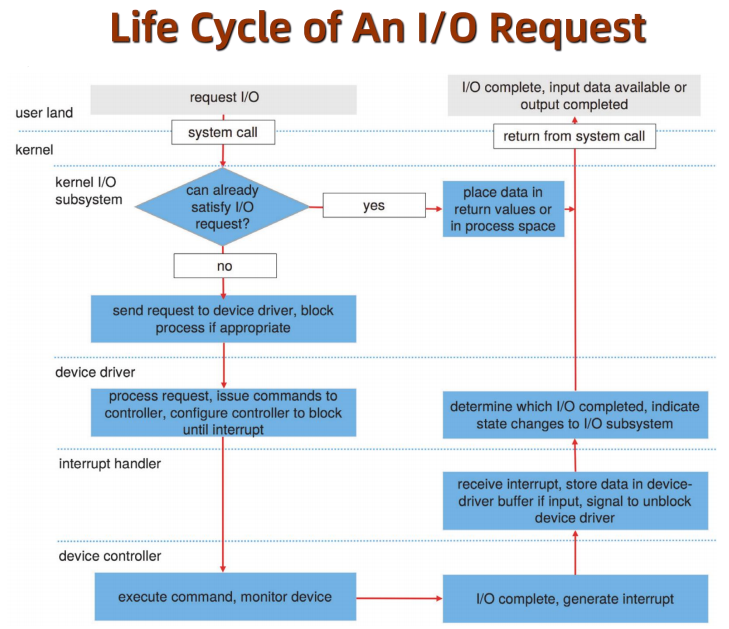
Performance
- IO影响系统性能
- CPU执行设备驱动，内核IO代码
- 中断引起的上下文切换给CPU带来负担
- 数据拷贝
- 网络传输引起压力
- 提高性能：
- 减少上下文切换的次数
- 减少数据拷贝
- 减少大文件传输、控制器、轮询引起的中断
- 使用DMA
- 平衡CPU、内存、总线、IO性能
考试介绍
待办事项
- [ ] JJM老师的作业题选择填空
- [ ] XYJ老师的复习课
- [ ] HJH学长A4纸整理
- [ ] 22-23回忆卷
- [ ] 23-24回忆卷
- [ ] 王道大题重点的总结
考试：
时间：1.7 10.30-12.30
题型：40选择题（写到指定答题卷中） 60分、4个填空题（概念类） 10分、三个问答题 30分
内容：有限开卷 A4三张、实验也要复习
复习：
- 第一章：
- OS定义、内核
- 中断的分类（硬件、软件trap（错误、系统调用））
- 同步IO、异步IO
- 设备状态表
- 存储等级
- cache 和 coherency
- OS 结构：多道编程、分时系统
- OS 操作：用户模式、内核模式、模式的切换
- 三大管理：进程、内存、存储，IO子系统
- 第二章：
- OS 服务（区分应用程序提供什么？OS 提供什么？）
- 系统调用 （API...）:smiling_imp:
- 设计原则 （mechaniasm, policy）
- OS 结构 （分层、宏内核(大而全)、微内核(易于扩展、安全、可靠、开销高)）
- 第三章：
- 进程状态转移：五个状态
- 进程控制块PCB、上下文切换，哪些信息需要恢复？
- 进程调度队列：Job Queue、Ready Queue、Device Queue
- 进程合作：生产者消费者模型，无线缓冲区模型、有限缓冲区模型
- 第四章
- 线程概念，...的最小单位
- 线程资源，什么是私有的(寄存器和栈)？什么是共享的？
- 用户级和内核级线程
- 多线程映射模型：多对一、一对一、多对多
- 第五章
- CPU调度 ready queue里面的调度，标准：利用率、吞吐量、周转时间、等待时间、响应时间
- 甘特图
- 调度的四种情况（14非抢占，23抢占）
- FCFS、SJF、Priority、Round Robin、Multilevel、Multi-feedback
- 优缺点
- 第六章:kiwi_fruit:
- 临界区问题：竞态资源，三个条件
- 抢占式、非抢占式kernels
- 软件同步（两个进程 PeterSon、面包房）
- 硬件指令（Swap, Test&Swap, Compare&Swap）
- Semaphone :smiling_imp: 资源释放FIFO
- 信号量实现：忙等待、非忙等待（阻塞）
- 两种模型（生产者消费者、读者写者）
- 第七章
- 四种死锁条件：互斥访问、Hold&Wait、无抢占、循环等待
- 预防：打破四种条件
- 单实例避免： :smiling_imp: RAG 进程资源分配图与死锁的关系
- 多实例避免：:smiling_imp: 银行家算法(安全检测算法、资源分配算法) 找到一个资源分配序列 Safty State，复杂度比较高，资源分配释放不够灵活
- 检测和恢复
- 第八章
- 绑定时间、逻辑/物理地址、三个时刻
- MMU，地址转换：逻辑地址->物理地址 :smiling_imp:
- 变长划分：动态分区分配、内部碎片（分区内部）、外部碎片（不连续空闲分区）
- 分页：页表，页表项，多级页表（额外内存访问），快表 TLB，倒置页表
- EAT；有效访问时间，包括TLB命中/缺失内存访问时间
- 分段：段表，页表与段表区别（页表固定）
- 第九章
- 虚拟内存的理解，目的是什么（把物理内存和用户内存分开）
- 请求式分页、请求式分段
- 缺页中断，检查页面引用有效，找到页表位置，发送读取请求
- 页面置换算法：减少缺页次数-页面访问顺序reference string：FIFO（Belady's Anomaly）、optimal最优算法、LRU算法、LRU近似算法（Seconde chance）
- 抖动 trashing：原因-locality大于物理内存，预防-减少内存的请求，working set
- 内存映射文件：映射
- 第十章
- 文件系统：如何加载
- 文件属性：文件控制块 inode
- 文件操作：打开文件表（系统、进程），访问模式
- 目录的结构：有效性、命名、Grouping
- 第十一章
- 实现的数据结构：磁盘中四个结构（BCB，VCB，目录，FCB）、内存中四个结构
- 分配方式：连续、链表、索引
- VFS：统一的接口
- 目录的实现：线性表、哈希表
- 十二章
- 磁盘访问时间：寻道时间+旋转时间+传输时间
- 磁盘调度算法：FCFS、SSTF、SCAN、C-SCAN、LOOK 、C-LOOK
- 十三章
- 轮询、中断、DMA
- 阻塞式 IO
- 设备状态表
- Caching, Buffering,
- Lab
- Rv-64 实验指导书
- 常见指令：ls, cp
- Trap与 系统调用